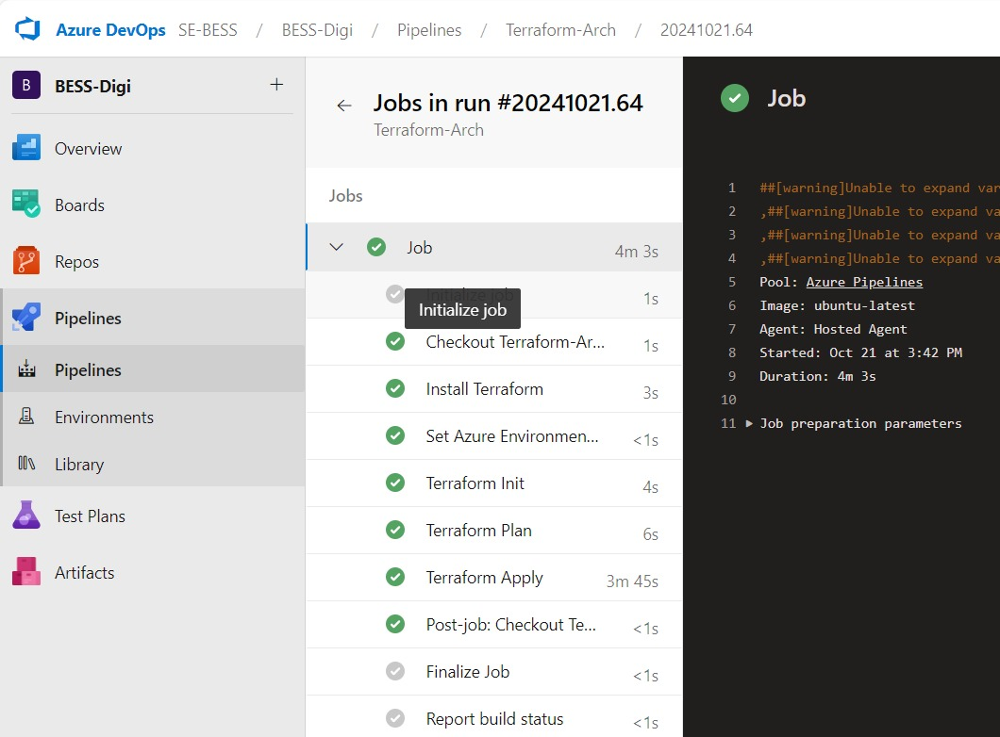
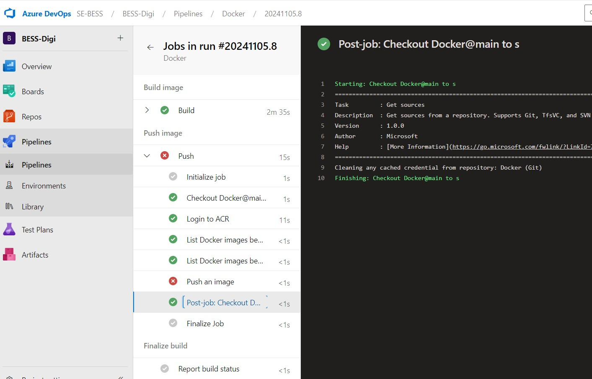
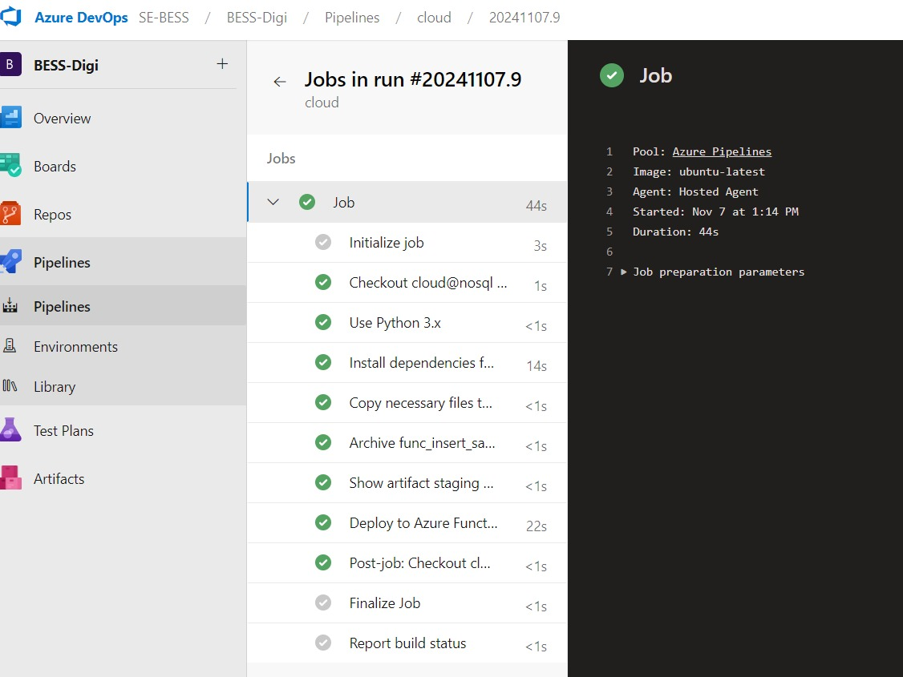

CI/CD pipeline for Terraform Arch repo
This section explains the CI/CD pipeline for the Terraform-Arch repository:

- Pipeline Overview
- Pipeline Name: Terraform-Arch
- Pipeline Run ID: #20241021.64
- Duration: 4 minutes and 3 seconds
- Agent Information:
- Pool: Azure Pipelines
- Image: ubuntu-latest
- Agent: Hosted agent
- Start Time: Oct 21, 3:42 PM
- Warnings: Unable to expand variables (no impact on success)
- Steps in the Pipeline
- Initialize Job: Sets up the pipeline environment
- Checkout Terraform-Arch: Pulls the required Terraform code
- Install Terraform: Installs the Terraform CLI tools
- Set Azure Environment: Configures Azure credentials
- Terraform Init: Initializes Terraform
- Terraform Plan: Generates execution plan
- Terraform Apply: Deploys infrastructure to Azure (took 3m 45s)
- Post-job: Checkout Terraform-Arch: Cleans up sensitive data
- Finalize Job: Completes post-run processes
- Report Build Status: Marks pipeline as successful
- Warnings in the Right Panel:
- Unable to expand variables, potential configuration issue
- Conclusion:
- The pipeline successfully deployed infrastructure with minimal warnings
CI/CD Pipeline for Dockerfile repo by Sweekruti
This section explains the CI/CD pipeline for the Dockerfile repository:

- Pipeline Overview
- Pipeline Name: Docker
- Pipeline Run ID: #20241105.8
- Pipeline Structure:
- Build Image: Successfully completed
- Push Image: Failed
- Duration: 2m 35s (Build), 15s (Push)
- Steps in the Pipeline
- Build Image Stage:
- Initialize Job: Sets up environment
- Checkout Docker@main: Pulls code from main branch
- Build: Successfully builds Docker image
- Push Image Stage:
- Login to ACR: Logs into Azure Container Registry
- List Docker Images Before Push: Ensures image availability
- Push an Image: Failed due to possible permissions or configuration issues
- Post-job: Cleans up resources after execution
- Finalize Job: Completes post-run cleanup
- Report Build Status: Marks pipeline as failed due to push error
- Actions to Fix the Failure:
- Verify ACR Permissions (AcrPush role)
- Confirm Image Tag and Repository Name
- Check Docker Registry Configuration
- Examine Logs for error details
- Retry the pipeline after fixes
- Conclusion:
- The pipeline successfully built the Docker image but failed during the push step.
- Logs should help pinpoint the exact cause of the failure.
CI/CD pipeline for Sarthak's Azure Function
This section explains the CI/CD pipeline for deploying a function to Azure:

- Overview of the UI
- Project Name: BESS-Digi
- Pipeline Name: cloud
- Run ID: #20241107.9
- Pipeline Jobs
- Initialize Job: Prepares the environment
- Checkout cloud@nosql: Fetches the cloud branch code
- Use Python 3.x: Sets up Python 3 runtime
- Install Dependencies: Installs required libraries
- Copy Necessary Files: Prepares files for deployment
- Archive func_insert_sample_func: Packages the function for deployment
- Show Artifact Staging Directory: Outputs the build artifact location
- Deploy to Azure Functions: Deploys the function
- Post-job: Cleans up resources after the job
- Finalize Job: Completes cleanup tasks
- Report Build Status: Marks the pipeline as successful
- Job Summary Panel (Right)
- Pool: Hosted Azure Pipelines
- Agent: Hosted agent
- Start Time: Nov 7, 1:14 PM
- Duration: 44 seconds
- Status Indicators:
- Green checkmarks indicate successful completion of each step
- Conclusion:
- The pipeline successfully deployed the function to Azure.
- All steps completed efficiently within 44 seconds.